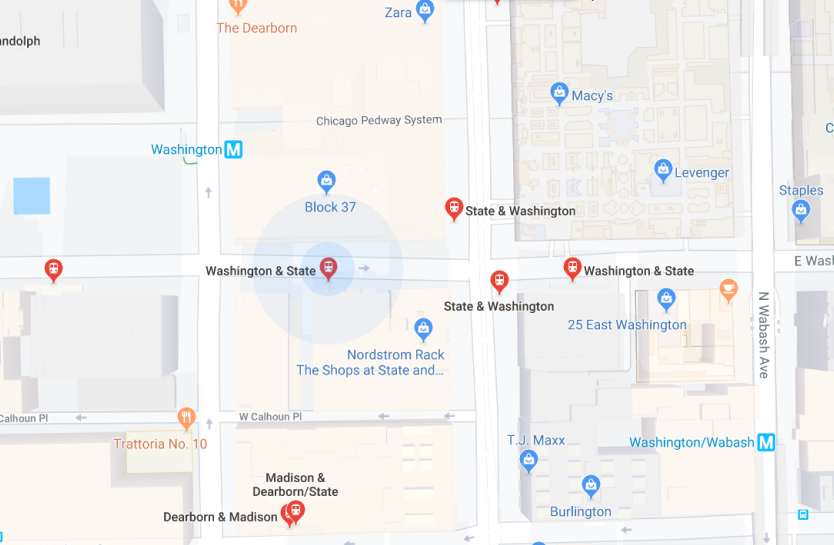

Washington & State
- Line 60
- Line 124
- Line 151
- Line J14
- Line 124
- Line 6x
- Line 4
- Line 20
- Line 157
- to Randolph/Harbor Dr
- to Navy Pier
- to Devon/Clark
- to 103rd/Stony Island
- to Navy Pier
- to Jackson Park Express
- to Cottage Grove
- to Madison
- to Streeterville/Taylor
- 10:00
- 09:50
- 09:56
- 09:55
- 09:50
- Reroute
- 00:10
- 00:10
- 06:00